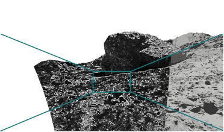

Quantum Vision

[Placeholder] The SPICE-HL3 dataset — combining single-photon, inertial, and stereo camera data from high-latitude lunar-analogue terrain — was released to support this line of work.
Related Publications
- SPICE-HL3: Single-Photon, Inertial, and Stereo Camera dataset for Exploration of High-Latitude Lunar Landscapes — Scientific Data, 2026
- Fast Vision in the Dark: A Case for Single-Photon Imaging in Planetary Navigation — ASTRA, 2025
- A dynamically reconfigurable single board computer for high-dynamic range space cameras — SMC-IT, 2024